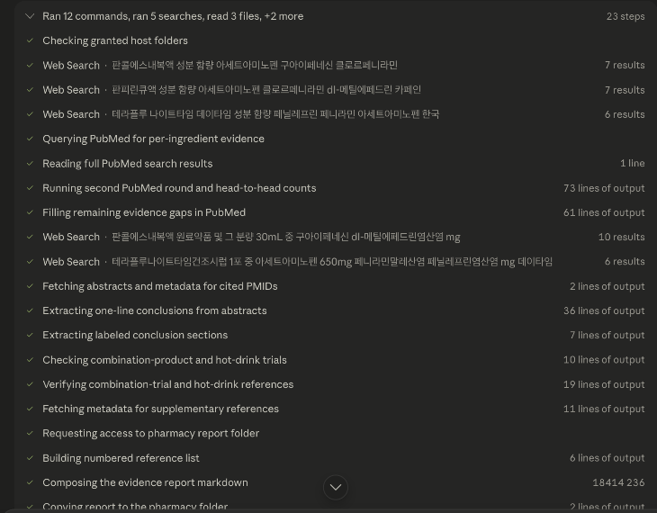
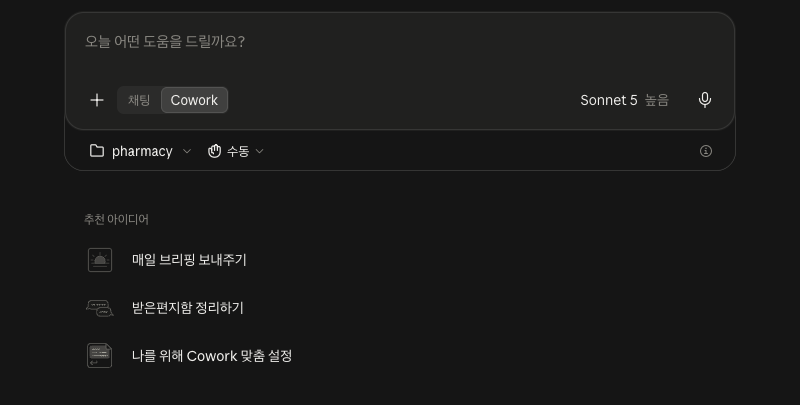

S07b_science_search.png
① 성분별 근거를 PubMed에서 찾고 곧바로 검증 — 후보 PMID 재조회, 2차 라운드에서 head-to-head 건수 확인, 초록에서 결론 문장 추출까지 단계로 보입니다

설명은 나중입니다. 완성 카드를 먼저 띄워놓고 “저게 AI로 된다고요?”가 나오면 오늘 절반은 된 겁니다. 아직 방법을 설명하지 마세요.

캡처 — 9월 3일 새벽 실측(사용량 한도로 1:00에 재개). 프로젝트 “상담카드” 안에서 보낸 프롬프트와 진행 단계 목록(왼쪽 사이드바까지 그대로). 프로젝트를 만들고 저장 위치를 적어두는 일은 여기서 다루지 않고 자동화 · 걸음 03(17번)에서 보여줍니다 — 이 장은 “부르는 말이 이 넉 줄”이라는 것만. 소요 12분, 51편 전부 PMID 확인, 보고서는 코워크 작업 폴더 00_근거함/에 자동 저장(폴더 쓰기 권한은 처음 한 번 물었습니다). 진행 화면은 다음 장에서 네 장면으로.

캡처 — 9월 3일 10:34 실측. 사이언스 보고서가 00_근거함/에 떨어진 뒤, 지시문 전문에 키워드 한 줄을 붙여 보낸 직후 — 오른쪽 컨텍스트 칸에 pharmacy. 보내자마자 폴더 접근 허용을 한 번 물었습니다(raw/S09_cowork_folder_permission.png). 여기선 “한 번은 손으로” — 긴 글을 통째로 넣는 게 오늘의 1회차입니다. 사이언스 07번과 같은 꼴로 부르는 장면 하나만. 같은 일을 “지시문_상담카드, 베아제 · 훼스탈” 두 마디로 부르는 건 자동화(20번)에서. 진행 화면은 다음 장에서 네 장면으로.


캡처 ① 실측에 쓴 코워크 작업 폴더 ~/workspace/pharmacy/ 의 Finder 화면 — 빈 폴더 4개(근거함 하나, 코워크가 채우는 셋)와 글 파일 하나가 전부입니다. ② 클로드 앱에서 새 세션을 열고 Cowork를 고른 뒤 폴더 버튼으로 pharmacy를 넣은 직후 — 입력창 아래에 폴더 이름과 승인 방식이 보입니다. 폴더 이름은 한글이어도 되지만 폴더 선택 대화상자에서 한글 검색이 어긋날 수 있어 영문 경로를 썼습니다. “설치가 아니라 폴더 하나”라는 걸 화면으로 보여주는 장입니다.

캡처 — 실측에 쓴 지시문_상담카드.md를 TextEdit로 연 화면. 맨 위에 호출 형식(지시문_상담카드, <키워드>), 역할, 결과 파일에 <접두어>_를 붙여 쌓는 규칙이 보이고, 아래로 1단계(품목 확정·허가사항)와 2단계 규칙 세 줄(통과·확인·제외), 3단계(카드 pdf)가 이어집니다. 청중은 이 파일 하나만 받으면 됩니다.

캡처 — New Project 대화상자(이름·Description·Agent Context). 실측 프로젝트는 9/3 새벽에 만든 것이고, 이 캡처는 폴더 이름을 근거함·결과함으로 바꾼 뒤 같은 내용으로 다시 채운 화면입니다(실제 프로젝트도 Project Settings에서 같은 경로로 고쳤습니다). Description은 목록에만 보이는 메모라 프롬프트에 들어가지 않고, Agent Context가 매 세션의 시스템 프롬프트에 붙습니다. 핵심은 저장 경로가 코워크 작업 폴더(~/workspace/pharmacy/00_근거함/)를 가리킨다는 것 — 보고서가 근거함에 바로 떨어지니 사람이 파일을 옮길 일이 없습니다. 두 도구가 서로를 부르는 건 아니고(13번) 같은 폴더를 보게 하는 것입니다. 발표 멘트는 “설치도 연동도 아니고, 저장 위치 한 줄”. 실측(9/3): 첫 실행 때 사이언스가 00_근거함 쓰기 권한(Read & write)과 복사 명령 허용을 한 번씩 물었고, 허용하자 보고서가 바로 떨어졌습니다.

캡처 — 코워크 완료 보고(9/3 실측, S13_3_testrun.png). 확정 품목 표, 파일 경로 3개, 집계(통과 15 · 확인 46 · 제외 8), 제외 사유 요약이 보입니다. 이 숫자는 10·11·12번과 같은 실행입니다.